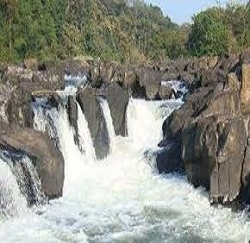
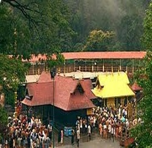
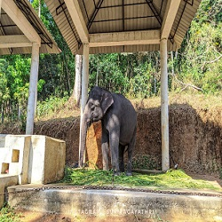

Perunthenaruvi Waterfalls are waterfalls 36 km from Pathanamthitta in Pathanamthitta District, Central Travancore region, Kerala State, India. It is a popular tourist destination situated in Vechoochira Panchayat of Ranni taluk. The one shore of this waterfall is Kudamurutty and Vechoochira is the other.
Read moreThe Sabarimala Temple is a temple complex located at Sabarimala inside the Periyar Tiger Reserve in the Perinad Village, Pathanamthitta district, Kerala, India. It is one of the largest annual pilgrimage site in the world with an estimate of over 40 to 50 million devotees visiting every year.
Read moreModest facility housing live adult elephants & calves, plus a wildlife museum & gift shop.Konni and Adavi, one of the beautiful places in Kerala, is famous its ... for the elephant training happening in the state attracts a huge number of visitors every year. ... Locally known as Aanakoodu, they can house up to 3 to 4 elephants at a time
Read more